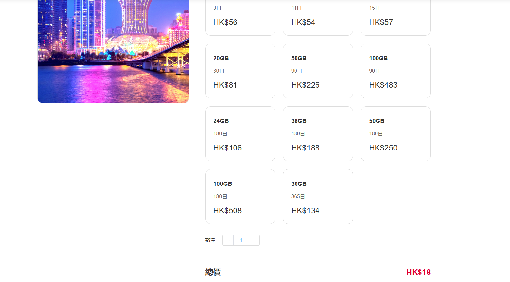
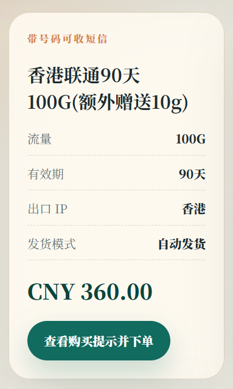
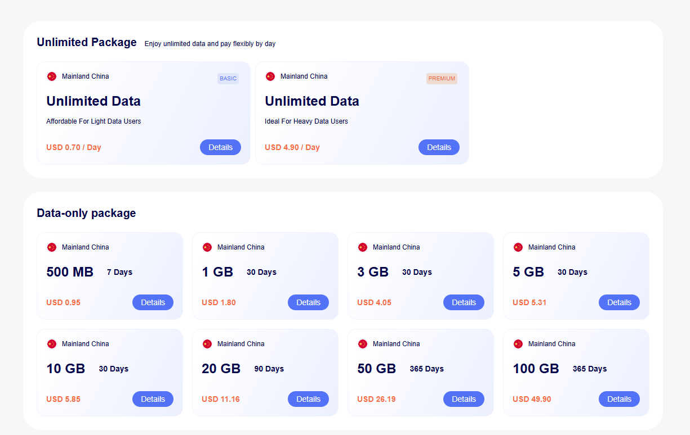
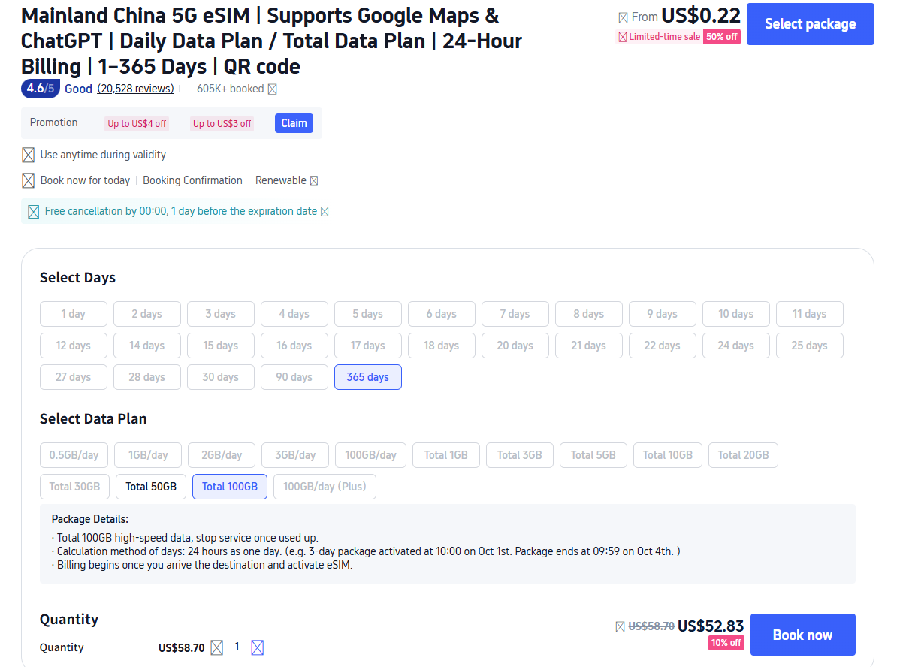
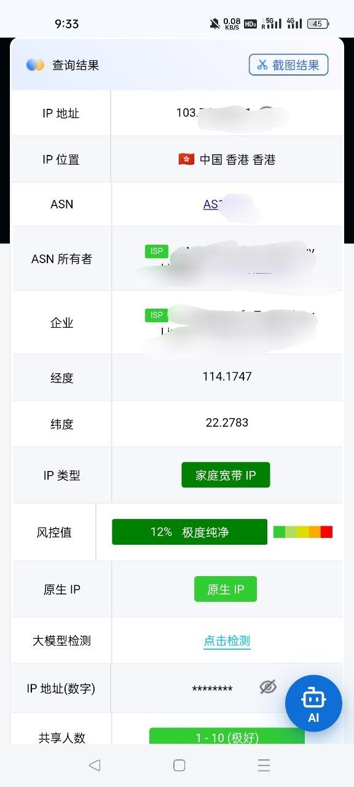
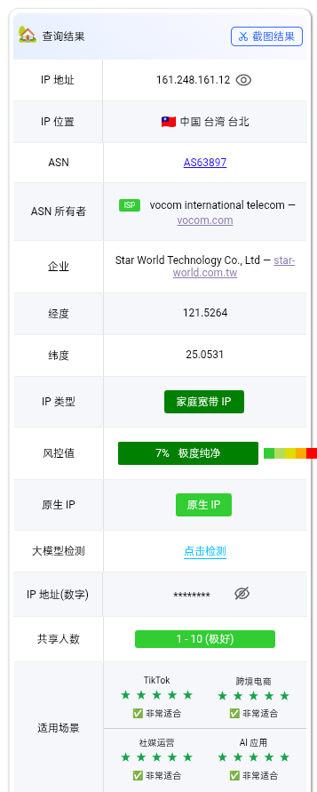
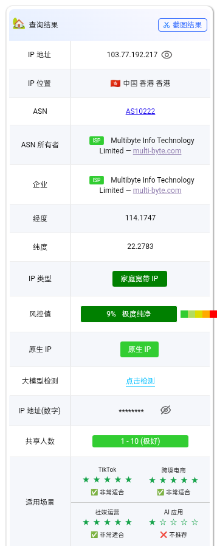

香港联通官网
20GB / 30 天 HK$81 可折算到约 3.51 CNY/G。
这是目前素材里最关键的价格参照图之一，适合说明中国联通香港 eSIM 的市场价格带大概落在什么位置。

China eSIM for customers
你真正关心的通常不是参数，而是买完能不能直接用、能不能连上国际网络、能不能开热点、能不能接短信、后面续费麻不麻烦。这页把这些最影响下单的点全部放进截图里，让你更快判断为什么很多客户最后会选 esimka.top。
What customers actually care about
够不够便宜，够不够稳，够不够省心，能不能接短信，后面续费麻不麻烦。下面这些图不是摆素材，而是帮客户更快看明白：为什么这类中国 eSIM 方案值得买。
Price
很多客户会先看价格，但真正决定下单的，是低价之外有没有香港线路、短信能力、自动发卡和更轻的开通流程。

这是目前素材里最关键的价格参照图之一，适合说明中国联通香港 eSIM 的市场价格带大概落在什么位置。

这张图不是为了攻击同行，而是提醒用户：购买中国相关 eSIM，除了总价，还要看每 GB 成本和激活条件。


Market reading
esimka.top 更适合强调的不是单一低价，而是低价之外还带香港线路、号码短信、自动发卡和更轻的使用流程。
Activation
很多客户最怕的不是贵，而是买完才发现还要境外预激活、还要卡时间、还要补步骤。能不能顺手开通，本身就是强卖点。
Rule change
这是教育型页面最适合解释的地方：并不是所有中国相关 eSIM 都能在大陆无门槛直接启用。
Network quality
香港线路、原生 IP、速度样例、低共享和低风控，这些东西一旦有图，客户理解成本会立刻下降很多。

这张图适合拿来支持“热点共享”和“跨境办公备用链路”这两个高频场景。

卖点文档建议把它写成样例出口，而不是绝对承诺，页面里也保持这个口径。

这类截图更容易解释什么叫“原生住宅 IP”，也更适合拿来支撑跨境电商、社媒运营与账号环境场景。

卖点资料强调，不要把它说成绝对匿名，而要说成更独立的移动数据路径和更高隐私弹性。
SMS and renewal
特别是做账号验证、长期备用通信、香港应用登录的人，他们最怕的不是流量用完，而是号不稳定、续费麻烦。

配合买点文档里的口径，更适合写成“续费后继续使用原号码接短信”，而不是过度承诺永久保号。
Long term use
Fast delivery
不用等邮寄、自动发卡、设备不支持 eSIM 也有后路，这类信息对客户的推动力通常非常直接。
图面本身已经把“可收短信”“香港出口 IP”“自动发货”三组卖点摆在一起了。
Instant path
Ready to choose
下一步最直接，就是去 esimka.top 看具体套餐页，按价格、线路、短信、续费和激活条件挑最适合你的那张。请根据当地法律、运营商规则和平台条款合规使用 eSIM 与跨境数据服务。